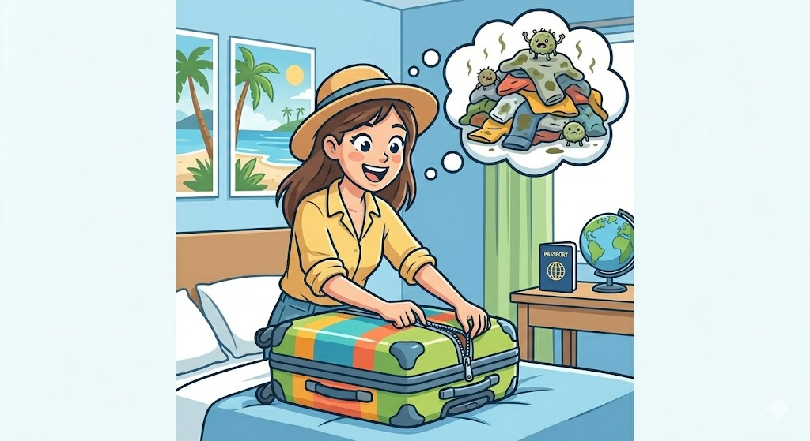
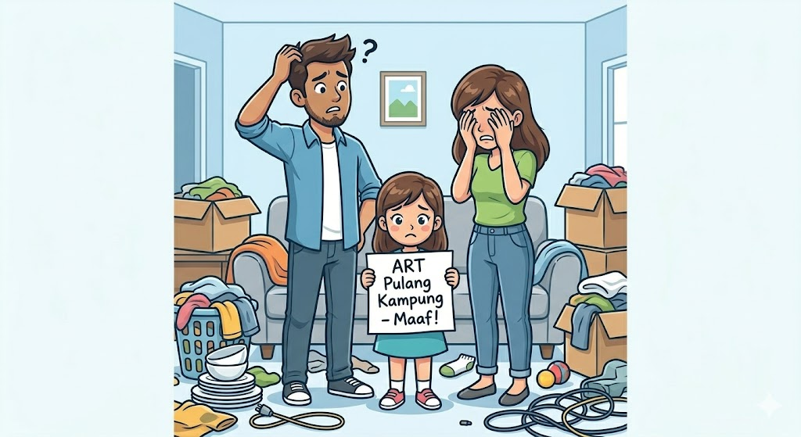
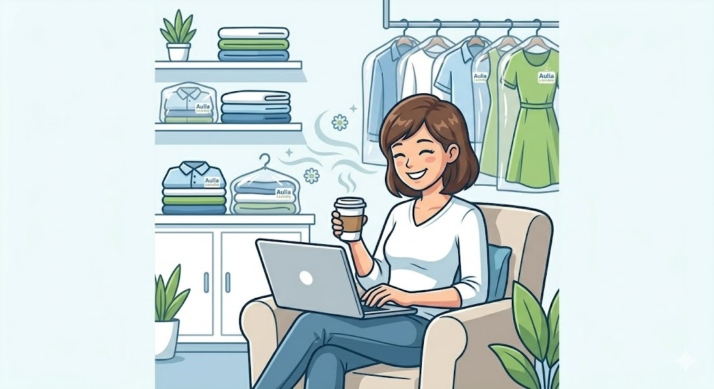
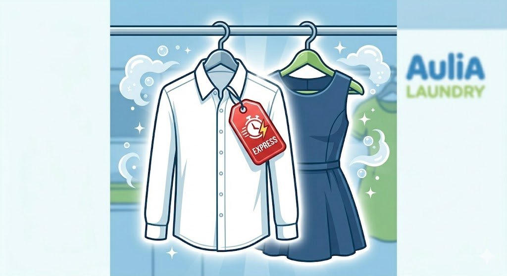
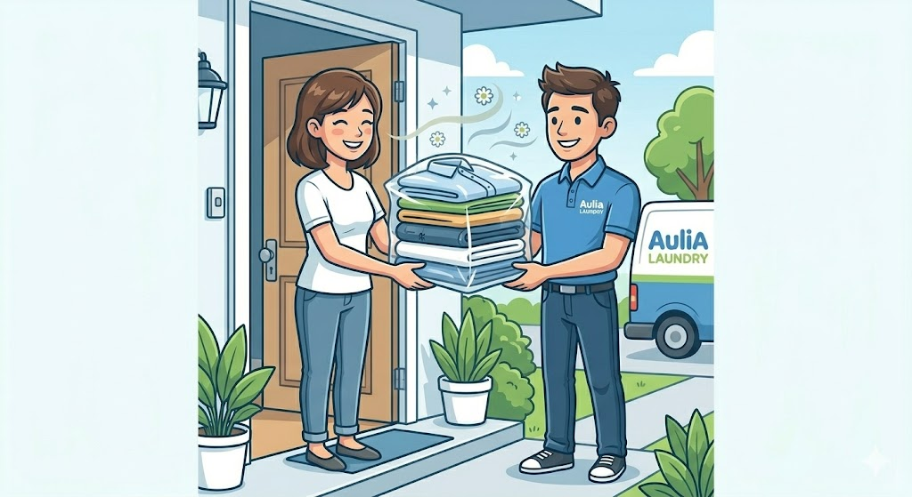

Kami Jemput-Kami Cuci-Kami Antar
Anda Tinggal duduk manis di rumah baju bersih, wangi, dan rapi

Kamu Punya Masalah Ini?

Ada acara mendadak dan takut baju kotor jamuran kalo gak cepat di cuci

Baju kotor numpuk malah di tinggal art pulkam
Fokus Saja pada Kesibukanmu, Biar Kami yang Urus Cucianmu!

Cari Cuan Jalan Terus, Baju Tetap Terurus.
Nggak perlu pusing mikirin cucian saat deadline kerjaan menumpuk. Dengan layanan Antar-Jemput Gratis, kurir kami yang akan datang ke rumahmu. Kamu tinggal fokus kerja, tau-tau baju sudah kembali bersih, wangi, dan terlipat rapi.

Cuci Kilat Ekstra Higienis, Siap Kapan Saja.
Ada acara penting dadakan? Tenang. Layanan Cuci Ekspres kami memastikan bajumu diproses secepatnya dengan deterjen anti-bakteri kelas premium. Baju kotor aman dari jamur, bebas bau apek, dan langsung siap dipakai untuk momen pentingmu.

Pengganti ART Paling Bisa Diandalkan Tanpa Drama.
ART pulang kampung bukan lagi kiamat kecil buat rumah tanggamu. Aulia Laundry siap jadi andalan dengan standar pencucian profesional. Dari memisahkan warna, mencuci, hingga menyetrika, semua kami kerjakan layaknya layanan hotel bintang lima.
Daftar Harga Layanan Kami
- Cuci & Gosok Rp 6.000/kg
- Cuci Saja Rp 3.000/kg
- Gosok Saja Rp 3.000/kg
- Ambal Rp 60.000/pcs
- Hordeng Rp 25.000/pcs
*Untuk harga yang tidak tercantum, silakan tanyakan via chat.
Tanya Harga via WAJangan khawatir kami punya garansi jika terjadi hal yang tidak di inginkan
- Garansi Cuci Ulang jika kurang bersih
- Jaminan Anti-Tertukar (1 Mesin 1 Pelanggan)
- Ganti Rugi jika pakaian rusak/hilang
Kami memperlakukan pakaian Anda layaknya pakaian kami sendiri. Kepuasan dan ketenangan pikiran Anda adalah prioritas kami